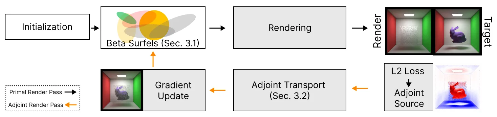

已知光照下稀疏视图的基于点的三维重建Point-Based 3D Reconstruction from Sparse Views under Known Illumination
对稀疏视图点表示和表面重建有新意，且给出几何误差与表示规模结果；但实验依赖受控已知光照和合成物体，距离真实场景和未知光照仍有明显差距。
一句话工作总结
用可微光传输约束紧凑 beta surfel 表示，在极少视图下恢复表面几何。
摘要
论文提出一种基于不透明度显式 beta surfel 的可微点渲染方法，在已知直接光照条件下利用物理光传输约束 surfel 的几何和外观参数。方法使用显式伴随光传输公式计算梯度，并在十个已知位姿视图上重建五个合成物体。作者报告其在评测方法中取得最低平均对称 Chamfer 距离，相比最强点表示基线降低 28.5%，同时平均只使用约 267 个 surfel。
Sparse view 3D reconstruction is commonly addressed with neural implicit surfaces or dense point-based representations such as Gaussian splatting. Surface-aware splatting methods improve extracted geometry through oriented primitives and regularization, while RadiosityGS incorporates differentiable light transport through a radiosity inspired finite-element surfel formulation. We propose a differentiable point rendering method based on opacity-bearing beta surfels. An opacity explicit adjoint light transport formulation provides gradients for surfel geometry and appearance parameters, allowing physically based light transport to constrain reconstruction. Across five synthetic objects reconstructed from ten posed views, our method achieves the lowest mean symmetric Chamfer distance among the evaluated baselines and reduces mean Chamfer distance by 28.5% relative to the strongest point-based baseline while using only 267 surfels on average, approximately ~161 fewer primitives. Directional Chamfer results further show improved accuracy and competitive completion relative to related point-based methods. These results show that, in the controlled direct illumination setting, compact beta surfels combined with transport-based optimization can recover surfaces without relying on the tens to hundreds of thousands of primitives used by the evaluated baselines.
中文解读摘录
- 论文：arXiv:2608.20000 · PDF
- 作者：Magnus Kaufmann Gjerde, Joakim Bruslund Haurum, Jeppe Revall Frisvad, Markus Worchel, J. Andreas Bærentzen, Thomas B. Moeslund
- 核心结果：以不透明度显式 beta surfel 和可微光传输约束表面几何与外观。在十个已知位姿视图和五个合成物体上，作者报告平均对称 Chamfer 距离最低，并以约 267 个 surfel 达到比最强点表示基线低 28.5% 的平均 Chamfer。
- 判断：紧凑点表示和物理光照约束很有新意，但结论目前强依赖已知直接光照、已知相机和合成对象。后续应重点看未知光照、真实纹理、位姿误差和更复杂遮挡下是否仍能保持几何优势。
- 评分：7.8/10。
图表/页面预览
{kind=link}
